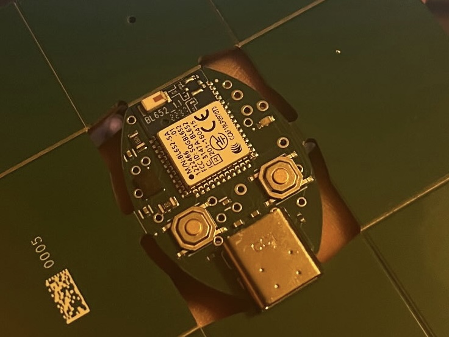
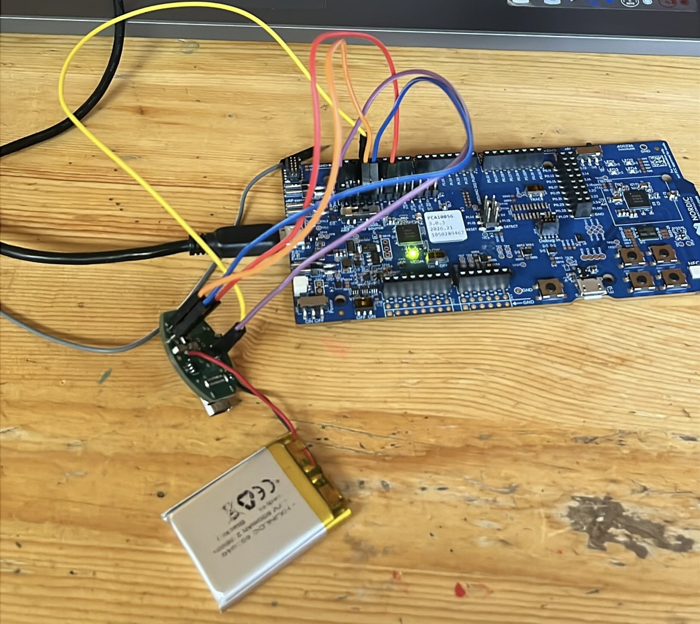

Smart Gym Sensor
Wearable Rep Detection & Form Analysis
An end-to-end wearable system that uses inertial sensors to automatically detect gym repetitions and analyze exercise form. Motion data is captured from a body-worn IMU, processed into per-rep biomechanical metrics like range of motion and tempo, classified by machine learning, and surfaced through a mobile app for live feedback and long-term progress tracking. Built solo, end to end: firmware, signal processing, machine learning, a real-time server, a custom PCB, and a companion app.
The prototype that generated all training data is an STM32 Nucleo-F411RE reading an InvenSense MPU-6050 IMU over I²C and streaming timestamped 6-axis samples over USB serial at a fixed 100 Hz. A typical capture looks like the raw six-axis trace below, ten consecutive bicep curls, each visible as a repeating swing in the accelerometer and gyroscope channels.

From there, a Python pipeline derives a drift-free tilt angle straight from the accelerometer's gravity vector (no gyro integration, no drift), and detects individual reps as peaks in that signal, shown below for the same set.

From each detected rep, the pipeline computes range of motion and tempo. Two scikit-learn models sit on top: one rates form quality from those per-rep features, and a second distinguishes real exercise from handling/background noise (~85% accuracy on held-out windows).
All of it runs live through a FastAPI + WebSocket server that analyzes a rolling window of incoming samples so recompute cost stays constant regardless of session length, persisting results to SQLite. A custom wearable PCB, a BL652 (Nordic nRF52832) BLE module paired with a Bosch BMI270 IMU, battery-powered and charged via USB-C, has been designed to replace the tethered prototype, shown below as a 3D render and as the routed 2D layout.


It has since been fabricated and debugged: continuity and voltage were checked with a multimeter, and a LiPo battery was soldered to the onboard charger.

Firmware was then flashed onto the board using an nRF52832 dev kit, and the resulting Bluetooth traffic was verified by monitoring it in Wireshark.

A companion React Native / Expo app for live rep feedback, weight logging, and progress graphs is in active development against the streaming server, ready to connect to the wearable now that its firmware is complete.
What I Learned
I learned the process for PCB fabrication and assembly, choosing passive packages that were consistent with what the seller offered, generating a Bill of Materials, and using the Gerber files to order the board. I learned how to use a multimeter to check continuity and voltage on the fabricated board, and how to solder a LiPo battery to the onboard charger. I also learned how to flash firmware onto the board using a dev kit, and how to monitor Bluetooth traffic in Wireshark to verify that the board was communicating correctly with the server. I learned the bring up process for a PCB and how to systematically debug with my multimeter and firmware. Learned how to take raw data and analyze it using python scripts to extract features and train machine learning models. Learned how to use FastAPI and WebSockets to stream data from the wearable to a server in real-time, and how to persist that data to a database for later analysis. Learned how to build a React Native app that connects to the server and displays live feedback and progress graphs.
Challenges I Faced
One of the most difficult parts f this project was making the PCB compact, for the features I wanted to include the PCB quickly became very packed which really grew my ability to efficiently wire up a PCB and make it compact. Another challenge was the bring up of the PCB, I had to learn how to use a multimeter to check continuity and voltage on the fabricated board, and how to solder a LiPo battery to the onboard charger. I also had to learn how to flash firmware onto the board using a dev kit, and how to monitor Bluetooth traffic in Wireshark to verify that the board was communicating correctly with the server.
What I'd Improve
This project is still in development and I am not finished, I think that a new iteration I will add in a UART interface to the wearable so that I can stream data over USB serial to a computer for debugging and data collection. I would also like to improve the machine learning models by collecting more data and training more complex models to improve accuracy and robustness. I would also like to spend more time on developing the UI of the app to make it more user friendly and visually appealing. I would also like to add more features to the app such as the ability to set goals and track progress over time, as well as the ability to share data with friends and coaches for feedback and motivation.